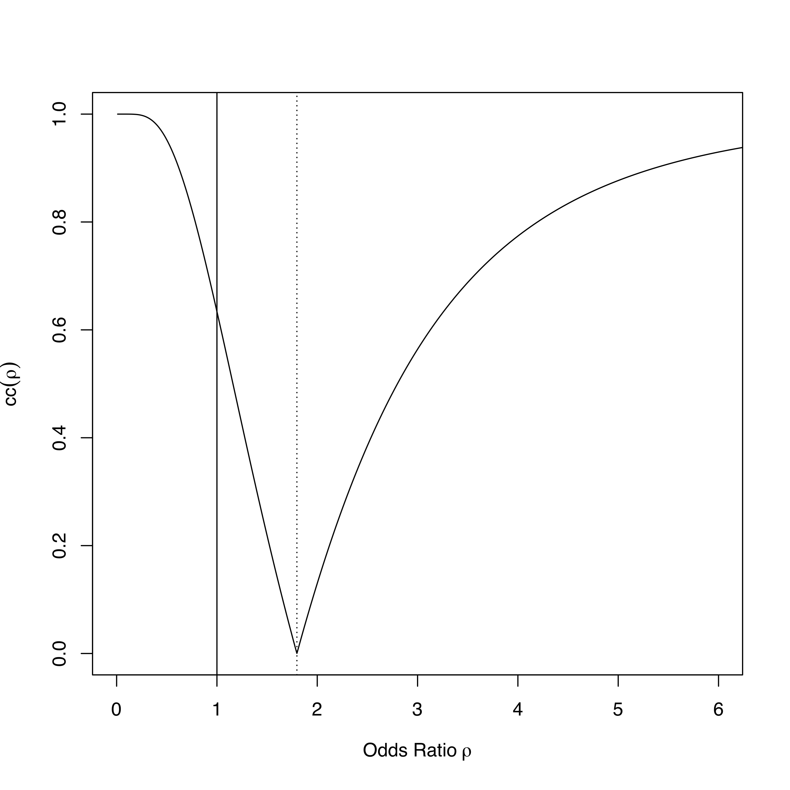

Homework 4
Chapter 2
Repeat your analysis from Homework 3 for the following 4 problems:
- Problem 2.4ab
- Problem 2.6ac
- Problem 2.27c
- Problem 2.30ab
using both SLRGN-based (as you did in Homework 3) and bootstrap-based inferential statistics.
Directions
- Use \(B = 5000\) bootstrap samples.
- For a problem that asks for a confidence interval, compute the confidence interval and the confidence curve under both the SLRGN and bootstrap models.
- Comment on the difference (or not) in your conclusions using the SLRGN versus bootstrap models.
- Refer back to your diagnostic plots for these data sets from Homework 2, and comment on whether the SLRGN- or bootstrap-based inferential statistics are more appropriate for each data set.
Hint: You can add a new confidence curve to a previously plotted confidence curve by passing the argument add = TRUE to the new call to plot.confcurve.
Additional Problems
Duality Between Confidence Intervals and Hypothesis Testing
We wish to test, assuming the SLRGN model, the following hypothesis:
\[ \begin{array}{ll} H_{0} : & \beta_{1} = \beta_{1}^{(0)} \\ H_{1} : & \beta_{1} \neq \beta_{1}^{(0)} \end{array}\]
at significance level \(\alpha\).
- Test Statistic Method:
- Determine an appropriate test statistic for this hypothesis test.
- Determine the rejection region for the appropriate test statistic for this hypothesis test at the significance level \(\alpha\).
- Confidence Interval Method:
- Determine the confidence interval that can be used to test this hypothesis.
- Determine the condition for rejecting the null hypothesis using this confidence interval at the significance level \(\alpha\).
- Show that the intervals of values of \(b_{1}\) for which the Test Statistic Method rejects the null hypothesis are equivalent to the intervals of values for which the Confidence Interval Method rejects the null hypothesis.
- Hint: For each of the two methods, write the intervals of values for which the null hypothesis is rejected as inequalities involving \(\beta_{1}^{(0)}\) and \(b_{1}\). Then show that the inequalities for each method specify the same intervals of values for \(b_{1}\).
Good Odds
The odds ratio \(\rho\) is a quantity used in medical research to compare binary outcomes under two different treatments. An odds ratio of 1 indicates that there is no difference between the two treatments.
A medical researcher has constructed a confidence curve to estimate the odds ratio between two treatments for some disease. The confidence curve from her sample data is given below.

- What is the 80% confidence interval for the odds ratio?
- What is the \(P\)-value associated with a two-sided hypothesis test of no difference between the two treatments?
The Lazy Scientist
A scientist tests the hypothesis
\[ \begin{array}{ll} H_{0} : & \beta_{1} = 0 \\ H_{1} : & \beta_{1} \neq 0 \end{array}\]
using a SLRGN-based \(P\)-value. He reports the following sample statistics
\[ \begin{aligned} n &= 101 \\ b_{1} &= 0.5 \\ s_{X} &= 2 \\ P &= 0.0013 \end{aligned}\]
Suppose you want to know the estimate of the variance of the noise in the SLRGN model, which the scientist was too lazy to report.
- What is the value of \(\widehat{\sigma_{\epsilon}^{2}}\) implied by the reported statistics?
- Can you still recover the estimate of the noise variance if he had tested
\[ \begin{array}{ll} H_{0} : & \beta_{1} = 2 \\ H_{1} : & \beta_{1} \neq 2 \end{array}\]
instead?